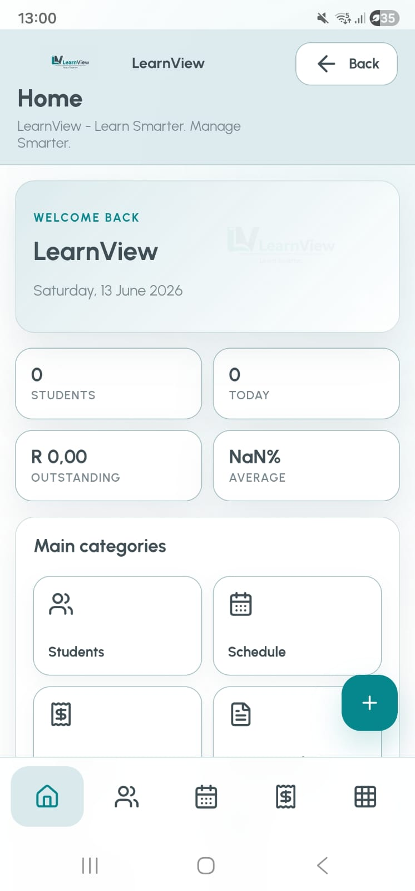
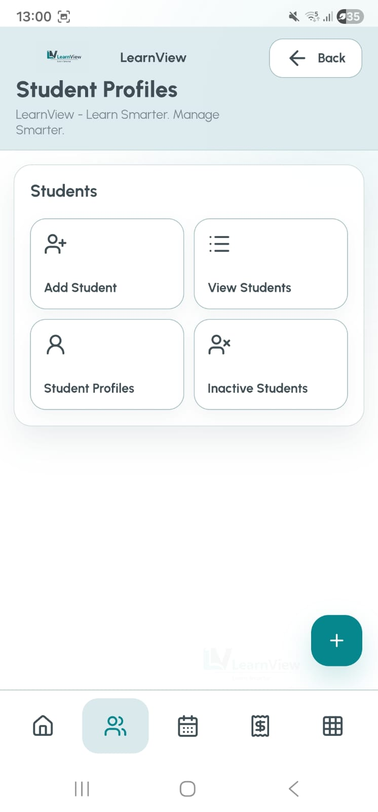
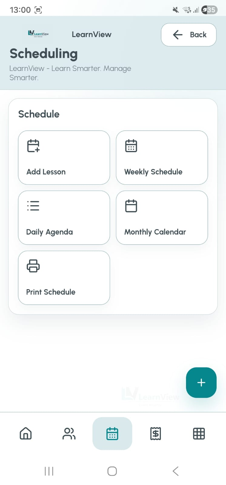
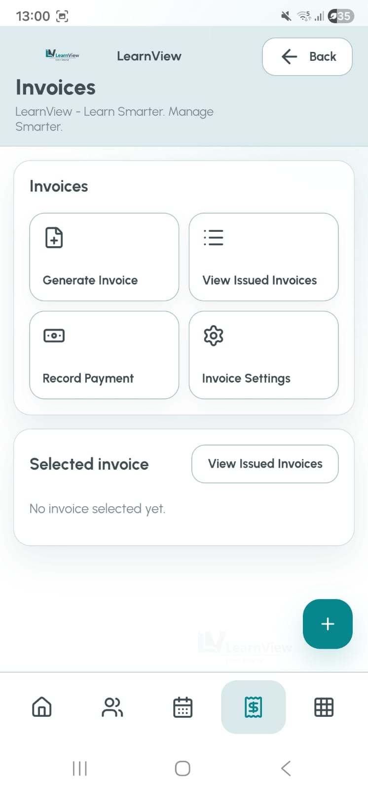

Operational Front End
A PWA interface for students, scheduling, invoices, assessments, analytics, reports, and administration.
Learn Smarter. Manage Smarter.
LearnView Nexus is an Education Operations Platform designed to support the end to end management of tutoring businesses through student administration, scheduling, attendance tracking, assessments, invoicing, payments, reporting, communication, analytics, and automation.
LearnView Nexus is a comprehensive education operations platform designed to streamline student administration, scheduling, attendance tracking, assessments, invoicing, payments, reporting, communication, and operational analytics for tutoring businesses.
The platform centralizes day to day educational operations into a single system, reducing administrative overhead while improving visibility into student performance, attendance trends, financial activity, and business operations.
Built as a Progressive Web Application with Google Apps Script integration, LearnView Nexus combines operational management, reporting, automation, and mobile accessibility into a unified solution.
JavaScript, Google Apps Script, Google Sheets, Progressive Web App, HTML, CSS, Capacitor Android, Business Analytics, Dashboard Development.
Tutoring businesses often rely on disconnected spreadsheets, manual scheduling processes, fragmented attendance records, and time consuming invoicing workflows.
LearnView Nexus was designed to address these challenges through a centralized education operations platform.
The product combines a mobile accessible front end with Google Apps Script and Google Sheets integration. This creates a practical operating layer for tutoring businesses that need structured records, repeatable workflows, dashboards, and business process automation.
A PWA interface for students, scheduling, invoices, assessments, analytics, reports, and administration.
Google Apps Script supports backend logic, data synchronization, reporting automation, and workflow support.
Google Sheets provides a familiar and flexible operational database for records, transactions, and reporting outputs.
Capacitor Android support positions the platform for mobile-first business administration.
LearnView Nexus provides operational visibility through student counts, lesson activity, outstanding balances, attendance averages, financial summaries, dashboard views, and business KPIs.

Student records are managed through dedicated profiles that support personal information, parent details, subject enrollment, attendance history, assessment performance, invoice history, payment records, report cards, notes, and trends.


Advanced scheduling capabilities support weekly calendar views, monthly planning, daily agendas, lesson management, conflict detection, and operational planning. The goal is process optimization: fewer manual clashes, clearer lesson visibility, and better use of tutor time.
Add lessons, manage agendas, and plan tutoring operations from a central schedule workflow.
Weekly and monthly views support short-term execution and longer-term operational planning.
Structured lesson records help reduce clashes between students, tutors, time slots, and subjects.
Scheduling moves away from informal manual updates into a repeatable operating process.
The platform includes integrated financial management functionality for invoice generation, invoice tracking, payment recording, revenue visibility, and financial reporting.

The administration hub gives access to settings, configuration controls, AI features, attendance, assessments, report cards, analytics, messages, subjects, setup, and data management workflows.

LearnView combines front end application development with backend business process automation. Google Apps Script supports data synchronization, Google Sheets integration, reporting automation, and operational workflow support.
Apps Script provides the logic layer for repeatable processes and operational actions.
Google Sheets acts as the structured business data layer for records, finance, attendance, and reports.
Automated updates reduce manual effort and help keep operational reporting consistent.
The integration connects student, schedule, attendance, invoice, and communication processes.
Student, schedule, attendance, assessment, invoice, payment, report, and communication workflows are brought into one system.
Manual processes are reduced through structured workflows and automation-ready data capture.
Dashboards and KPIs give tutoring businesses a clearer view of performance, revenue, attendance, and growth.
Communication workflows support parent messaging, attendance notifications, invoice notifications, and performance updates.
Invoices, payment records, outstanding balances, and revenue visibility support better financial management.
Operational analytics help owners identify trends, performance gaps, and business priorities.
Process analysis, requirements gathering, workflow design, stakeholder thinking, and business process improvement.
KPI development, reporting, dashboard design, attendance analysis, revenue visibility, and performance analysis.
Google Apps Script, JavaScript, PWA development, system design, automation, and data integration.
Mobile-first workflows, operational navigation, feature grouping, and scalable product architecture.
These repositories show the broader product and automation ecosystem connected to the portfolio.
LearnView Nexus is positioned as a flagship product that demonstrates product design, Business Analysis, process improvement, operational reporting, Google Apps Script automation, dashboard development, and full stack solution design.
The result is more than a tutor app. It is an Education Operations Platform designed to help tutoring businesses operate with clearer processes, stronger reporting, better financial visibility, and scalable administration.
Back to Products